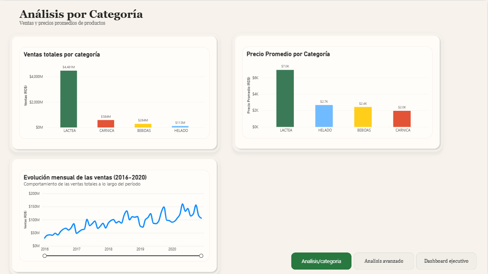
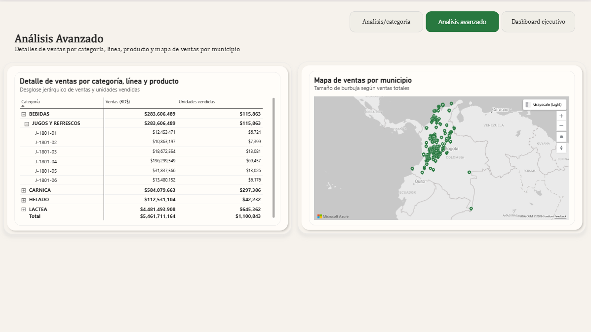

Análisis por categoría

Dashboard / Business Intelligence
Dashboard interactivo diseñado para facilitar el análisis de ventas, identificar tendencias y comparar el comportamiento de diferentes áreas del negocio.

Organizar y presentar la información de ventas de manera que permitiera analizar el desempeño comercial desde varias perspectivas, sin depender únicamente de tablas extensas o datos dispersos.
El reto principal era lograr una visualización clara de variables como categorías, sucursales, evolución temporal, precios promedio y comportamiento geográfico, facilitando la comparación y la interpretación de los datos.
Se desarrolló un dashboard interactivo en Power BI que integra indicadores clave, filtros dinámicos y distintas visualizaciones para explorar la información de ventas de manera clara y estructurada.
La solución permite consultar el comportamiento general de las ventas, profundizar en categorías y productos, observar tendencias a lo largo del tiempo y visualizar la distribución geográfica de las ventas mediante mapas e indicadores comparativos.
De la vista general al detalle por categoría, línea y producto. Amplía las capturas para consultar los gráficos y las tablas.


Puedes descargar el archivo de Power BI para explorar el dashboard directamente en Power BI Desktop.
Descargar dashboard (.pbix) Archivo de Power BI · 4,84 MBSi quieres conocer más sobre mi trabajo o conversar sobre una idea, puedes escribirme.